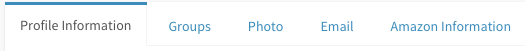
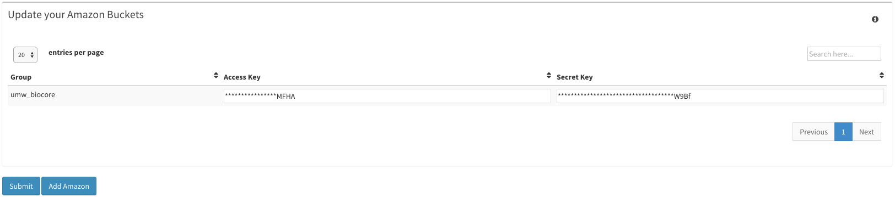

Dolphin Profile Guide¶
This guide will walk you through all of your options within the Profile page.
Getting Started¶
First, make sure to have an instance of dolphin available (see Dolphin Docker) as well as an account for the dolphin interface.
Once logged in, click on the tab in the top left of the screen with your name, then click on ‘Profile’ once the new menu appears.

Profile Page¶
Once you’ve accessed the profile page, you’ll notice two main portions of the page.
The first segment is the tab layout.
This is your main form of navigation throughout the profile page.
Following these tabs is your ‘Profile Information’, or the first selected tab of the navigation tab.

This section will allow you to see various information about your user.
If you select the ‘Groups’ tab, you’ll then be shown a table with all the groups that you are a part of.

You have the option of creating groups and requesting to join groups at the bottom left corner of this tab.
Additionally, if you are the owner of a specific group, you have some additional options to the left of that specific group name.

You have the option to view users who have a pending request to join your group, you can also view all of the current users.
If you so desire, you can even transfer the ownership of one group to another member within that group.
And lastly you can also delete the group as well.
The next tab labeled ‘Photo’ simply allows you to change your stock photo seened at the top left of your screen.

The fourth tab allows you to edit your listed email address and decide whether or not we have permission to send you an email upon a run completing.

The last tab labeled ‘Amazon Information’ displays your groups current AWS key information. You will only have full access to editing and viewing the key information if you are the owner of the group
Whenever you have finished making changes to any of these tabs, make sure to select the ‘Update’ button if one is presented.